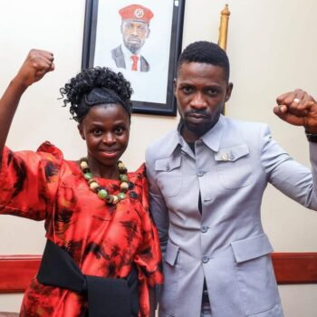

Leadership · Service · Kayunga
Representing Kayunga. Advancing accountable leadership, opportunity and stronger communities.

Harriet Nakwedde was born in Busaana Sub-county, Kayunga District. She trained and worked as a teacher, holding a Bachelor's degree in Education from Makerere University and a Master's in Human Resource Management from Makerere University Business School.
Her years in the classroom shaped the issues she has carried into public life ever since — school retention, particularly for girls, and the everyday obstacles rural constituents face in accessing basic services. The move from teaching into human resource management gave her a second lens on institutions: how they are run, who they serve, and where they fall short. Both threads — education and institutional accountability — recur throughout her political career.
Kayunga has been the constant backdrop to that career. Long before she held office, she was a visible presence in local political life, building relationships across the district's sub-counties and establishing herself as a persistent, if not always successful, contender for elected office.
She first contested the Kayunga Woman MP seat in 2006 on the FDC ticket, and again in 2011 — both unsuccessful. She went on to serve ten years as Kayunga District FDC Chairperson and five years as the party's Deputy Secretary for Education nationally, while also serving as District Woman Councillor for Kayunga Town Council and Sub-county, and Secretary for Education on the District Executive Committee, between 2016 and 2021.
She contested for Woman MP again in 2021, and separately ran for Kayunga LC V Chairperson in a late-2021 by-election, losing both races. Each defeat was followed by a return to organizing rather than a retreat from politics — a pattern that came to define her reputation locally: someone who kept standing, cycle after cycle, regardless of the outcome. In January 2026 — twenty years after her first attempt — she won the Kayunga Woman MP seat. A petition against her win was filed and dismissed by the Kayunga Chief Magistrate's Court later that month, confirming her election.
She was appointed Deputy Chief Opposition Whip and Shadow Minister for the Presidency in May 2026, placing her inside the opposition's parliamentary leadership within months of taking her seat — a fast rise that reflects both the two decades of groundwork behind it and the confidence of her party colleagues in the 12th Parliament.
Outside the chamber, she is the founder of the Forum for Emancipation to Empowerment Drive (FEED), an organization built around the same causes she has championed publicly for years: girls' education, women's economic independence, and grassroots civic participation. She is married to Robert Nangatsa and has three children.
A position she's held publicly since 2006 — respect for the rule of law, democracy, and people's rights without discrimination. It is the thread running through nearly every other stance she has taken, from her handling of the 2026 election petition to her willingness to challenge alleged abuses through formal, institutional channels rather than outside them.
In a 2022 interview, she described running a campaign to take pregnant girls back to school in Kayunga — a direct extension of her own career as a teacher. The initiative reflects a broader conviction that dropout, once it happens, is rarely permanent if there is someone actively working to reverse it, and that girls' education specifically requires deliberate, targeted intervention rather than general policy.
In 2023 she was among organizers of a Kayunga protest over an unfulfilled presidential pledge to tarmac a district road — demonstrators carried signs reading "No tarmac road, no votes." The protest was as much about accountability for broken promises as it was about the road itself, and infrastructure delivery remains a standing measure she applies to sitting officials, including now to her own record in office.
She has described being physically assaulted during the contested 2021 LC V by-election campaign. She pursued the matter through the courts rather than dropping it — consistent with her public stance on rule of law. That same instinct shaped her response to the 2026 petition against her own election: she let the Chief Magistrate's Court resolve it rather than treating the challenge as illegitimate on its face.
For constituents, journalists, and partners — reach the Kayunga Woman MP's office directly. Constituency issues, from local infrastructure concerns to matters affecting schools and health services, are logged and followed up individually. Press inquiries relating to her parliamentary role or FEED are welcome through the same channel.